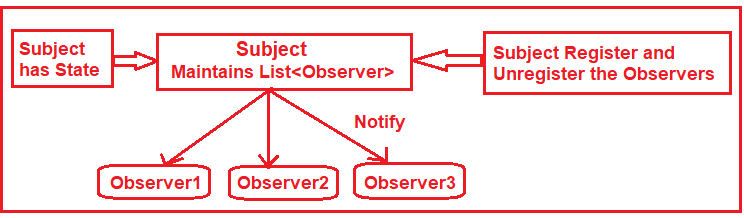

Лекція 08
Поведінкові патерни GoF
Як уже створені об’єкти взаємодіють між собою.
Взаємодія, не збірка
Структурні патерни складали об’єкти. Тут вони вже є — тепер треба розподілити між ними обов’язки.
Спостерігач (Observer)

- Коли: зміна одного об'єкта вимагає оновлення інших, і ви не знаєте заздалегідь, скільки їх буде.
- Уникайте, коли: у вас є складна ланцюгова логіка підписок, що може призвести до нескінченних циклів. Також класичний Спостерігач часто спричиняє витоки пам'яті (memory leaks): суб'єкт міцно тримає посилання на підписника, і якщо ви забудете відписатися, Garbage Collector не зможе видалити його з пам'яті. Альтернатива: Медіатор або брокери повідомлень (Message Queues).
interface IObserver {
void Update(Product product);
}
interface ISubject {
void Register(IObserver o);
void Remove(IObserver o);
void Notify(Product p);
}Спостерігач у житті й у .NET
- Уявіть чат: зайшов користувач — треба розіслати нотифікації. Звісно, підписку можна зняти.
- У самій мові C# це
event. У бібліотеці —IObservable<T>. Ми детальніше розберемо BCL на лекції 09. - Зверніть увагу, що суб’єкт не знає конкретних класів спостерігачів — він бачить лише інтерфейс.
Команда (Command)
Запит стає окремим об’єктом. Ви можете поставити його в чергу, скасувати або записати в лог.
interface ICommand { void Execute(); void Undo(); }
class LightOn : ICommand {
private readonly Light _light;
public LightOn(Light light) => _light = light;
public void Execute() => _light.On();
public void Undo() => _light.Off();
}- Коли: потрібна історія операцій, скасування (Undo/Redo) або відкладене виконання.
- Уникайте, коли: ваша програма виконує прості лінійні операції. Перетворення кожної простої дії на окремий клас-команду змусить вас написати гори зайвого коду, що зробить архітектуру надмірно перевантаженою. У сучасному C# для багатьох задач достатньо передати звичайний делегат (
ActionабоFunc). Альтернатива: Прямі виклики методів або лямбда-вирази.
Згадайте MediatR: там є IRequest та IRequestHandler.
Стратегія (Strategy)
Контекст просто делегує роботу одному з алгоритмів за спільним інтерфейсом.
- Коли: є кілька варіантів одного алгоритму (сортування, знижки) і їх треба перемикати під час виконання.
- Уникайте, коли: алгоритмів небагато і вони рідко змінюються. Виділення їх в окремі класи лише ускладнить читабельність коду. Крім того, клієнтський код мусить чітко знати, чим одна стратегія відрізняється від іншої, щоб обрати правильну, що розмазує бізнес-логіку по системі. Альтернатива: Звичайні
if/switchабо патерн Стан (якщо перемикання автоматичне).

Стан (State)
Схоже на стратегію, але тут стан сам вирішує, який крок буде наступним.
class Order {
private IOrderState _state = new Draft();
public void Pay() => _state.Pay(this);
internal void Become(IOrderState next)
=> _state = next;
}- Коли: поведінка об'єкта повністю змінюється залежно від його внутрішнього стану (кінцевий автомат).
- Уникайте, коли: станів всього 2-3 і правила переходу між ними тривіальні. Використання патерну змусить вас створити купу нових класів, які розпорошать логіку кінцевого автомата. Вам доведеться стрибати по різних файлах, щоб зрозуміти, як об'єкт переходить зі стану в стан. Альтернатива: Простий
switchабо патерн Стратегія.
Порівняйте: стратегія каже «покладіть мені алгоритм», а стан каже «я вже Paid, тому Pay більше не діє».
Шаблонний метод (Template Method)
Ви тримаєте каркас алгоритму в базовому класі. А самі кроки робите abstract або virtual у нащадках.
abstract class DataImporter {
public void Run() {
Open(); Read(); Parse(); Close();
}
protected abstract void Read();
protected virtual void Parse() { /* ... */ }
}- Коли: є сталий алгоритм, але реалізація окремих його кроків має відрізнятися в нащадках.
- Уникайте, коли: ви хочете зберегти гнучкість архітектури. Шаблонний метод базується на наслідуванні, що є найсильнішим типом зв'язності в ООП. Якщо базовий клас розростеться, змінити його без поломки всіх нащадків стане практично неможливо. Альтернатива: Патерн Стратегія (використовує гнучку композицію замість наслідування).
Ланцюжок обов’язків (Chain of Responsibility)
Ваш запит іде по руках. Хтось його обробив — або передав далі. Ланка може зупинити ланцюг.
abstract class Handler {
protected Handler? Next;
public Handler SetNext(Handler n) {
Next = n; return n;
}
public virtual void Handle(string r)
=> Next?.Handle(r);
}- Коли: запит можуть обробити різні об'єкти, і обробник не визначений заздалегідь.
- Уникайте, коли: вам гарантовано треба виконати всі кроки обробки, або коли відсутність обробника є критичною помилкою. У класичному ланцюжку запит може дійти до самого кінця і просто загубитися. Крім того, дуже складно відлагодити скрізний стек викликів і зрозуміти, яка саме ланка зупинила процес. Альтернатива: Декоратор (якщо треба виконати всі кроки) або простий цикл (Pipeline).
Посередник (Mediator)
Об’єкти не знають одне про одного безпосередньо. Усі їхні розмови йдуть через посередника.
- Коли: компоненти системи занадто сильно пов'язані між собою (спагетті-код), що ускладнює їх тестування та повторне використання.
- Уникайте, коли: бізнес-логіка починає повністю перетікати всередину медіатора (додаються перевірки, умови). Сам посередник дуже швидко ризикує перетворитися на непідтримуваний "божественний об'єкт" (God Object), що контролює всю систему і є єдиною точкою відмови. Альтернатива: Патерн Спостерігач (Observer).
Наприклад, кнопка не смикає список напряму, а каже медіатору: "мене натиснули". Медіатор вирішує, що з цим робити.
Коли який
- Якщо у вас багато слухачів однієї події — обирайте Observer.
- Коли запит стає окремою річчю (для undo чи черги) — це Command.
- Якщо клієнт обирає алгоритм — це Strategy. А коли об’єкт сам змінює свій режим — це State.
- Маєте спільні кроки, але різні деталі — використовуйте Template Method.
- Потрібен фільтр чи обробка по черзі з можливістю зупинки — беріть Chain of Responsibility.
- Для зв’язку багато-до-багатьох без зайвої павутини — вам допоможе Mediator.
Після лекції
Що далі
На лабораторній ви напишете спрощений медіатор, схожий на MediatR. Ваші обробники будуть transient, і ви напишете власні тести для маршрутизації.
Тему Iterator та event у BCL ми розглянемо на лекції 09. Якщо хочете, можете підготувати доповідь про патерни поза курсом — наприклад, Visitor, Memento чи Bridge.